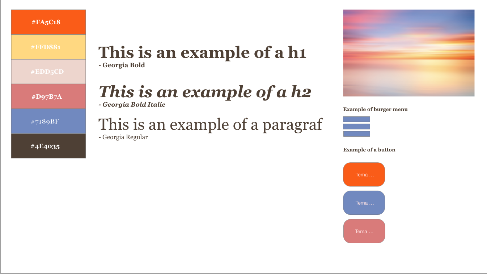
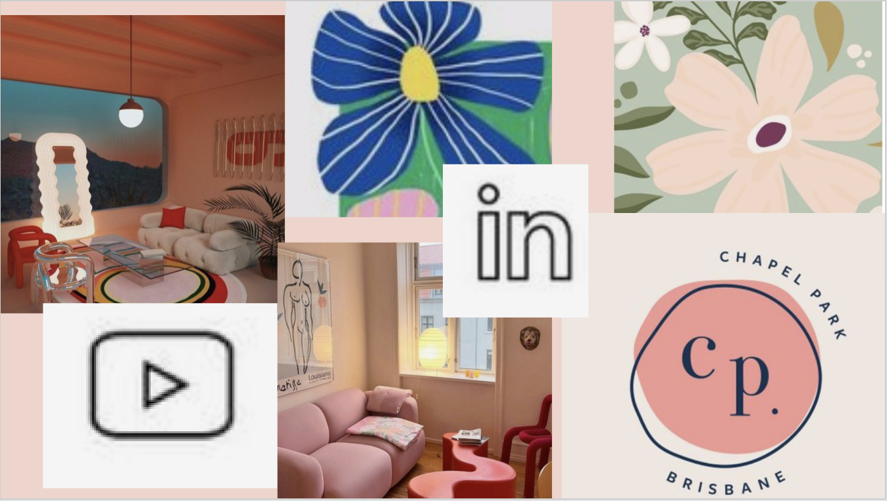
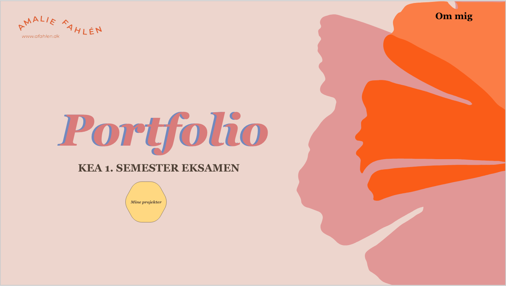
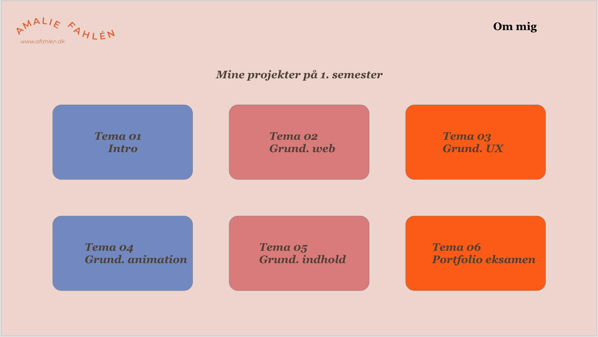
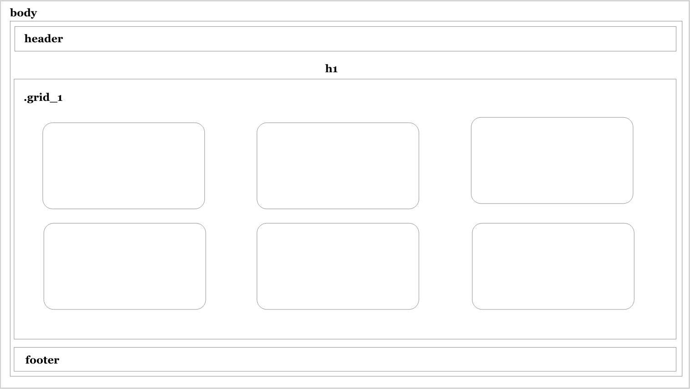
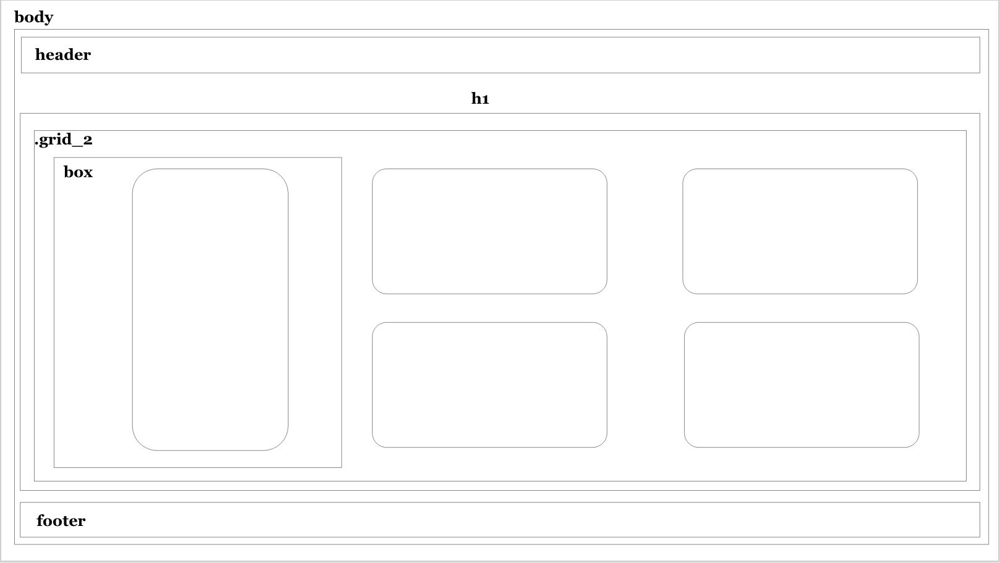

Hvordan har jeg opbygget min portfolio?
Styletile & moodboard
 Jeg ville gerne lave et site som viser hvad vi har lært på 1. semester, men samtidig lave noget der afspejler sig i mig. Derfor fik jeg i gang med at lave et moodboard og en styletile, så jeg nemmere kunne visualisere mine tanker om portfolioen.
Inden jeg gik i gang med at kode min portfolio gjorde jeg mig nogle tanker omkring hvordan jeg gerne ville have den skulle se ud.
Prototype
 Efter jeg havde lavet det gik jeg i gang med en prototype. Jeg valgte farver og fonte og tegnede baggrund i Illustrator.
Jeg brugte lang tid på at finde farver da jeg gerne ville have alle mine farver skulle spille sammen.
Layoutdiagram
 Jeg ville gerne lave mit layout enkelt men samtidig ville jeg gerne vise at jeg bruger grid til at opbygge mine kasser og på den måde laver struktur.
Da jeg selv godt kan lide at have styr i mine ting har jeg opbygget min portfolio ud fra kasser. På den måde kan jeg også nemt finde mine opgaver.